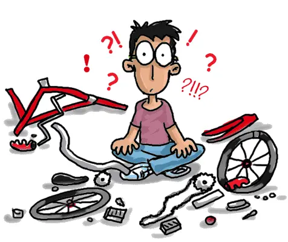

AUTONOMIE ET DÉBROUILLARDISE

Google et YouTube sont largement considérés comme parmi les meilleures plateformes pour trouver des explications et des informations sur une grande variété de sujets.
- Vaste indexation : Google indexe une immense quantité de pages web provenant du monde entier, ce qui signifie qu'il a accès à une multitude d'informations sur pratiquement tous les sujets imaginables.
- Algorithme de recherche avancé : Google utilise un algorithme de recherche sophistiqué qui analyse et classe les pages en fonction de leur pertinence et de leur qualité. Cela permet de trouver rapidement des informations fiables et pertinentes.
- Diversité des formats : Google peut vous fournir différents types de ressources, tels que des articles, des tutoriels, des présentations, des forums de discussion et bien plus encore.
- Fonctionnalités supplémentaires : Google propose des fonctionnalités comme la recherche d'images, de vidéos, de nouvelles, de livres, etc., ce qui permet de trouver des informations dans divers formats.
YOUTUBE
- Contenu visuel : YouTube est une plateforme de partage de vidéos, ce qui signifie qu'elle offre des explications sous forme de vidéos. Les vidéos peuvent fournir des explications visuelles, des démonstrations, des tutoriels pas à pas et bien plus encore.
- Variété des créateurs : Des millions de créateurs de contenu du monde entier partagent leurs connaissances et leurs compétences sur YouTube. Cela signifie que vous pouvez trouver des explications dans une grande variété de domaines, du bricolage à la science en passant par la musique et la cuisine.
- Moteur de recherche vidéo : Le moteur de recherche de YouTube est spécialement optimisé pour trouver des vidéos pertinentes en fonction de vos requêtes.
- Commentaires et interaction : Les vidéos sur YouTube sont souvent accompagnées de sections de commentaires où vous pouvez poser des questions et interagir avec les créateurs et d'autres spectateurs pour obtenir des éclaircissements supplémentaires.
Toujours croiser les informations provenant de différentes sources pour obtenir une vue d'ensemble précise.
Draw.io est un outil en ligne de création de diagrammes et de schémas. Il permet aux utilisateurs de concevoir des diagrammes de flux, des organigrammes, des diagrammes de réseau, des schémas de base de données, des maquettes d'interface utilisateur, des plans d'architecture et bien d'autres types de graphiques visuels.
L'outil offre une interface conviviale qui facilite la création de diagrammes professionnels, même pour les personnes qui ne sont pas des concepteurs expérimentés.
Visual Studio Code, souvent abrégé en VS Code, est un éditeur de code source développé par Microsoft. Il est conçu pour être léger, rapide et extrêmement personnalisable, ce qui en fait un choix populaire parmi les développeurs pour écrire du code dans une variété de langages de programmation.
VS Code est gratuit et open source, ce qui signifie que les utilisateurs peuvent l'utiliser, le personnaliser et contribuer à son développement.
W3Schools est un site web éducatif populaire qui propose des ressources et des tutoriels pour apprendre et comprendre les technologies liées au développement web et à la conception de sites web.
Fondé en 1998, W3Schools est largement utilisé par les débutants et les développeurs expérimentés comme une ressource de référence pour apprendre, pratiquer et maîtriser divers langages de programmation et technologies web.
Le "Wiki" dans Microsoft Teams fait référence à une fonctionnalité de collaboration qui permet aux équipes de créer et de partager des pages de contenu, de notes et de documentation au sein de leur espace d'équipe. Cela permet aux membres de l'équipe de rassembler et d'organiser des informations importantes, de collaborer sur des documents et de conserver une base de connaissances partagée.
TIM-Doc est une ressource en ligne qui regroupe l'ensemble des connaissances que vous allez apprendre au cours de la session. Cette ressource peut jouer un rôle crucial dans la préparation et la compréhension des matières enseignées.
TIM-Doc est un point d'accès centralisé à une collection complète de documents, de supports de cours et de ressources pédagogiques spécifiques au cours de Web 1. Cela signifie que vous pouvez utiliser ce lien pour accéder à toutes les informations pertinentes dont vous aurez besoin pour étudier et réussir votre session académique.
CodePen est une plateforme en ligne populaire qui permet aux développeurs web de créer, expérimenter et partager du code HTML, CSS et JavaScript en temps réel. C'est un environnement de développement web interactif qui offre un espace de travail virtuel pour tester des idées, créer des maquettes, résoudre des problèmes et collaborer avec d'autres développeurs.
CodePen est souvent utilisé pour la création de prototypes, la démonstration de concepts, l'apprentissage et la création de petites applications web.